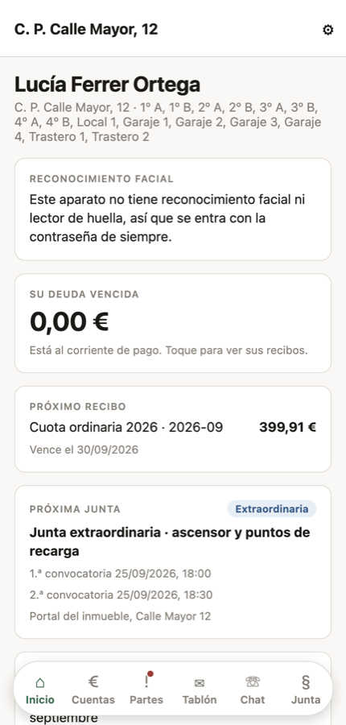
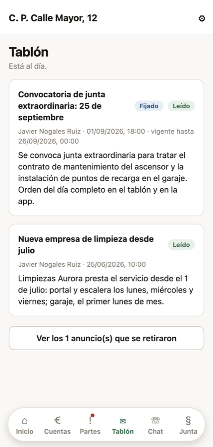
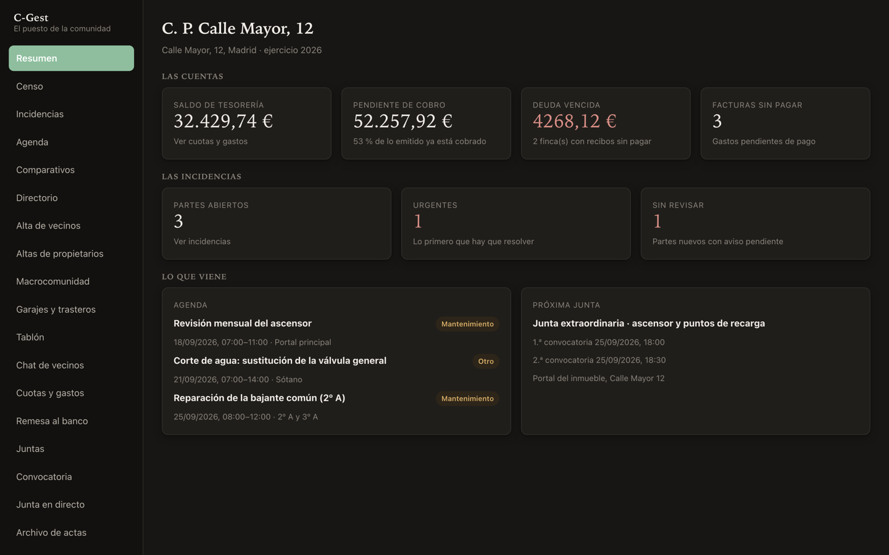

Quién tiene derecho a voto el día de la junta art. 15.2
Ninguna otra lo calcula
El moroso pierde el voto, pero ¿moroso a qué fecha? C-Gest lo calcula a la fecha de la junta y lo mete en la convocatoria, que es donde la Ley obliga a ponerlo.
C-Gest lleva las cuentas, los recibos, las juntas y las actas de tu edificio. Tú sigues siendo un vecino; el programa hace la parte que da miedo.
Gratis para cada vecino, siempre. Lo contrata la comunidad, sin permanencia y con catorce días para echarse atrás.

La Ley de Propiedad Horizontal dice, en su artículo 13.5, que «las funciones del secretario y del administrador serán ejercidas por el presidente de la comunidad» salvo que la junta nombre a alguien para cada cosa.
Traducido: si tu comunidad no paga a un administrador de fincas, tú eres las tres cosas a la vez. Y no lo pediste — el cargo es obligatorio, y solo se sale de él pidiéndoselo a un juez dentro del primer mes.
Representas a la comunidad, convocas la junta, firmas el acta y respondes de lo que se hace.
Levantas el acta y la cierras con su firma en diez días naturales. Custodias los papeles cinco años.
Llevas las cuentas, preparas el presupuesto, pasas los recibos y persigues a quien no paga.
No lo decimos por decir: salen de leer 390 opiniones de las aplicaciones que ya existen y los foros donde los presidentes preguntan sus dudas.
Ninguna otra lo calcula
El moroso pierde el voto, pero ¿moroso a qué fecha? C-Gest lo calcula a la fecha de la junta y lo mete en la convocatoria, que es donde la Ley obliga a ponerlo.
Ninguna otra lo resuelve
La presidencia se renueva cada año. Aquí pasa de un vecino a otro en un solo acto, y el que entra se encuentra todo ordenado en vez de una caja con el libro de actas y unas llaves. En las demás aplicaciones, el programa muere con el administrador.
Todas enseñan un saldo; ninguna, de dónde sale
De tus 40 € al mes, cuánto va al ascensor y cuánto a la limpieza. Y al lado, lo que de verdad se lleva gastado en cada cosa. Cuando las dos cifras se separan, hay una conversación que tener — y aquí se tiene con números.
Ninguna otra la redacta
Con el voto de cada finca y su coeficiente, no con lo que recuerde quien escribe. Y quien vota desde el móvil puede confirmarlo con su cara o su huella: el acta hace constar cómo se identificó, sin que la comunidad guarde ningún dato biométrico.
Ninguna otra lo emite
Lo que pagaste durante el año, desglosado entre cuotas y derramas. Si tienes el piso alquilado, las cuotas son gasto deducible; hasta ahora había que pedírselo al presidente para que rebuscara en los extractos del banco.
Cada piso, local, garaje y trastero con su coeficiente de las escrituras. La suma tiene que dar 100 % exacto, sin redondeos: si no cuadra, el programa te dice cuánto falta.
Ascensor, limpieza, seguro, fondo de reserva. Lo apruebas, lo anuncias en el tablón y cada gasto se imputa a su partida.
Repartes por coeficiente y siempre suma el total exacto. Se acabó discutir en junta por dos céntimos que no cuadraban.
Con los mandatos firmados, el programa genera el fichero de la remesa domiciliada y lo subes al banco. Dejas de perseguir transferencias.
Orden del día, primera y segunda convocatoria, los seis días de antelación y la advertencia de quién se queda sin voto. Todo puesto.
Al montar cada punto del orden del día: mayoría simple, tres quintos, unanimidad. Y luego cuenta los votos aplicando esa regla, en propietarios y en cuotas.
Se cierra con las dos firmas dentro de los diez días y queda guardada en PDF por años, con su histórico de quién presidía cada año.
El vecino abre el parte desde el móvil con su foto. A ti te llega el aviso, y el historial queda para cuando haya que reclamar al seguro.
Puestos uno al lado de otro por lo que a la comunidad le importa, y anunciados en el tablón para que nadie diga que no se enteró.
Los avisos donde se leen, con lo retirado guardado aparte por si hay que consultarlo. El grupo de la comunidad separado del de las bromas.
Si tu urbanización tiene varios portales con junta propia, cada uno lleva lo suyo y la macrocomunidad lo suyo. Sin duplicar a nadie.
Quién ve cada cosa lo decide el servidor, no la pantalla. Los morosos no salen con nombre en ningún tablón público.


El puesto, para quien lleva la comunidad. Todo lo que hay que mirar un lunes por la mañana, en una pantalla.
Las cifras son para una comunidad de treinta vecinos, al año.
| Qué | Al año | Por vecino y mes |
|---|---|---|
| Administrador de fincas | 1.400 – 2.900 € | 4 – 8 € |
| Administración online | desde 720 € | desde 2 € |
| C-Gest | según viviendas | te lo digo hoy |
El precio va por número de viviendas, porque no cuesta lo mismo llevar ocho pisos que ochenta. Dinos cuántas sois ahí abajo y te lo decimos el mismo día, sin que tengas que hablar con nadie por teléfono si no quieres.
Gratis para cada vecino, siempre. No hay compras dentro de la aplicación: la contrata la comunidad y se paga fuera, contra su CIF, como cualquier otro servicio que aprueba la junta.
Sin permanencia, sin penalización por darse de baja y con catorce días naturales para echarse atrás. Y el día que lo dejéis, os lleváis todos vuestros datos, enteros y sin coste.
Otro gasto más
Comparado con un administrador de fincas, es lo que cuesta un mes de administrador al año. Y no sustituye ningún gasto que ya tengáis: sustituye el tiempo que echa el presidente.
Yo no tengo móvil, o no me aclaro con esas cosas
No hace falta que lo uses. Lo usa quien lleva la comunidad. Todo lo que sale de ahí se puede imprimir en papel, y a quien lo pida se le sigue dando en papel como hasta ahora.
¿Y nuestros datos, dónde acaban?
Son de la comunidad, no de la empresa. Una comunidad no ve nunca los datos de otra. Y el día que lo dejéis, os los lleváis enteros y sin coste. Está en el contrato.
¿Y si el año que viene soy yo el presidente?
Es justamente lo que mejor resuelve. El cargo se pasa dentro del programa y el que entra se lo encuentra todo ordenado.
Nosotros ya tenemos administrador
Entonces C-Gest es donde cada vecino ve lo suyo sin tener que llamar a nadie: sus recibos, las cuentas, las actas y a qué se va su cuota. El administrador sigue donde está.
Con cuántos vecinos sois y qué es lo que más trabajo te da me basta para decirte si esto te sirve — y si no te sirve, te lo digo también. Contesto el mismo día.